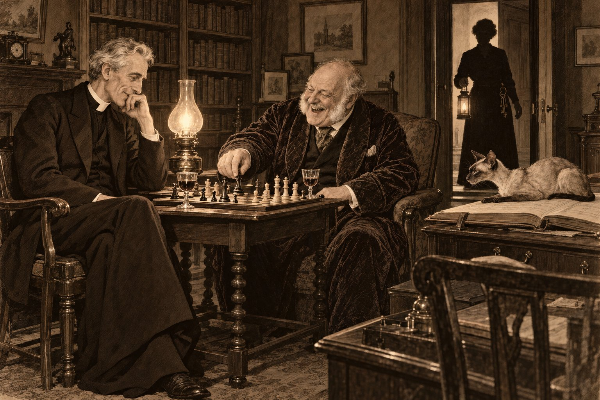

Обращённый

В первый четверг августа 1922 года преподобный Эмброуз Морс, викарий Сент-Гатлака, сидел за завтраком и читал в газете, что мистер Гилберт Кит Честертон, писатель, перешёл в Римско-католическую церковь. Заметка была короткой и почтительной, как пишут о покойниках, и викарий прочёл её дважды. Потом он сложил газету, положил её рядом с тарелкой и сказал жене, что в этом нет ничего удивительного.
— Конечно, нет, — сказала миссис Морс, наливая ему чай. — Он двадцать лет писал про католического священника. Человек, который двадцать лет пишет про одного и того же священника, рано или поздно идёт к нему исповедоваться.
Викарий не ответил, потому что думал не о Честертоне. Он думал о другом письме, которое лежало у него в кабинете, в ящике стола, под счётами за уголь, с середины июня. Он не перечитывал его с тех пор, но помнил наизусть, как помнят обидные слова, а это письмо, если разобраться, было совсем не обидным.
«Дорогой Эмброуз, — писал ему сквайр Хэтерли из Лондона. — Вчера меня принял в Католическую церковь отец Браун, твой знакомый, тот самый маленький человек с зонтом, с которым мы три года назад пили у тебя в саду. Я знаю, что ты рассердишься. Не сердись. Я никуда не ушёл. Я пришёл домой. Приезжай по-прежнему по четвергам, у меня новая доска, и чёрные теперь мои — я ведь стал папистом. Твой Р. Х.»
Двадцать пять лет викарий ездил по четвергам в Хэтерли-Корт играть в шахматы. Двадцать пять лет они со сквайром пили там портвейн, спорили об Августине, о десятине, о том, можно ли пускать в церковь собак, и ни разу не поссорились по-настоящему, потому что настоящих ссор у людей, которые так хорошо знают друг друга, не бывает: бывают только старые споры, которые доставляют удовольствие обоим. С середины июня викарий в Хэтерли-Корт не ездил. Он не объявлял об этом и не сердился вслух. Он просто каждый четверг находил какое-нибудь неотложное дело — больного в дальнем хуторе, совещание приходского совета, протекающую крышу — и всем, даже себе, объяснял, что сквайру сейчас нужно время, чтобы обжиться в новой вере, и не нужно мешать ему старыми спорами.
— Ты бы съездил к нему сегодня, — сказала миссис Морс, словно прочла его мысли, что случалось с ней часто и всякий раз раздражало его. — Четверг.
— Ему сейчас не до меня. У него новые друзья.
— У него один новый друг, и тот живёт в Лондоне. — Она поставила чайник. — Эмброуз, ты не о его душе горюешь, а о своих четвергах.
Викарий хотел возразить, что дело именно в душе, что человек, которого он двадцать пять лет считал добрым англиканином, вдруг объявил, что всю жизнь жил не дома, и что это задевает не его самолюбие, а саму Церковь Англии. Но жена посмотрела на него поверх чайника тем взглядом, которым смотрела на него без малого тридцать лет и под которым его доводы обычно теряли половину своего веса ещё до того, как он успевал их высказать. Он промолчал и пошёл в кабинет.
В кабинете на раскрытой приходской книге, как всегда, лежал кот. Пами было уже за двадцать. Он был сиамский, кремовый, с тёмной, почти шоколадной маской на морде, тёмными ушами и светло-голубыми глазами, которые в старости стали ещё светлее, словно выгорели на солнце. Он прибыл в этот дом котёнком из Бангкока, в корзинке, больше двадцати лет назад и с тех пор считал его своим посольством, а людей в нём — местным населением, к которому надо относиться снисходительно. Викарий сел за стол и, не сгоняя кота, вытащил из-под счетов письмо. Пами посмотрел на письмо, потом на хозяина и закрыл глаза.
— Ты тоже считаешь, что я дурак, — сказал викарий.
Кот не ответил, что было ответом.
⁂
В «Плуге» в тот вечер говорили о Честертоне. Не потому, что в Сент-Гатлаке кто-нибудь читал Честертона, а потому, что о нём писали все газеты, а трактирщик читал вслух всё, что писали все газеты.
— Говорят, он теперь будет писать про своего попа ещё больше, — сказал кузнец Хэйр.
— Куда уж больше, — сказал старый Хаммонд, который пятьдесят лет пел в хоре басом и считал, что этого достаточно, чтобы разбираться в богословии. — Теперь, верно, поп у него станет святым.
— Он и так был святой, — сказал трактирщик. — Только незаметный.
Викарий пил своё тёмное пиво из своей оловянной кружки с вмятиной и в разговор не вмешивался. Он думал о том, что в Сент-Гатлаке есть свой обращённый, и о нём тоже говорят, только тише. Сквайр Хэтерли был в приходе так же привычен, как церковная башня: высокий, грузный, с седыми бакенбардами, в бархатной куртке, которую носил уже тридцать лет, и с громким смехом, который было слышно с другого конца ярмарки. Он сидел в первом ряду на каждой утрене, читал на Рождество отрывок из пророка Исаии и путал при этом ударения, давал деньги на крышу северного придела и спорил с викарием о проповедях прямо на паперти. А в июне он уехал в Лондон, вернулся католиком и в первый ряд больше не садился. По воскресеньям он теперь уезжал на автомобиле в Стамфорд, к мессе в католическую церковь на Брод-стрит, и в деревне об этом говорили так, как говорят о вдове, которая слишком скоро сняла траур.
— А мисс Кэролайн всё ходит к нам, — сказал кто-то у стойки. — Каждое воскресенье. Играет на фисгармонии так, что стёкла дрожат.
— Ей теперь самое время, — сказал Хаммонд. — Кто-то в том доме должен остаться англиканином.
Домой викарий шёл через луг. Был тёплый вечер, над Фенами — осушенной болотной равниной к востоку от Стамфорда, где небо всегда больше, чем земля, — догорал закат, и по прямым, как линейки, каналам шла розовая вода. У калитки его встретил Сирил. Мальчику было двенадцать, он вытянулся за лето и ещё не успел к этому привыкнуть, а под мышкой у него была большая плоская папка.
— Я был в Хэтерли-Корте, папа, — сказал он. — Сквайр показывал мне гравюры. Плавания капитана Кука. Там есть Таити, и льды, и как туземцы приплывают на лодках к «Индевору». Он сказал, что подарит мне книгу, когда я выучу наизусть, как звали все корабли Кука.
— И как же их звали?
— «Индевор», «Резолюшн», «Адвенчер» и «Дискавери», — без запинки сказал Сирил. — Я уже выучил. Он сказал, чтобы ты к нему приехал. Сказал: передай отцу, что чёрные ждут.
Викарий взял у сына папку, чтобы тот не уронил её в канаву, и ничего не ответил.
⁂
Отец Браун приехал в субботу дневным поездом, и встречал его на стамфордской станции не викарий, а автомобиль сквайра. Викарий узнал об этом от почтальона, который знал всё раньше всех, и от почтальона же узнал, что завтра утром в Хэтерли-Корте отслужат мессу. В часовне.
Часовню в Сент-Гатлаке знали все, хотя внутри не бывал почти никто. Она была пристроена к северной стене старого дома ещё в те времена, когда Хэтерли молились за души своих покойников по-латыни и платили за это монахам из Кроуленда. Потом пришла Реформация, монахов разогнали, и триста семьдесят лет часовня служила кладовой: сначала для сена, потом для дров, а последние сто лет — для яблок. Мальчишки рассказывали, что в ней водятся привидения, и это было единственное, что в ней водилось, кроме мышей. Прошлой осенью, задолго до своего обращения, сквайр велел вынести оттуда яблочные полки, отбить побелку и вставить стёкла. Тогда все решили, что он просто чудит на старости лет.
В воскресенье в восемь утра, когда в Хэтерли-Корте шла месса, первая в той часовне почти за четыре века, викарий служил свою утреню в Сент-Гатлаке. Народу было, как обычно, человек сорок. Мисс Кэролайн Хэтерли сидела за фисгармонией, прямая, как свеча, в сером платье, с тяжёлой связкой ключей на поясе. Самым большим в связке был старый кованый ключ от часовни, длиной в две ладони, который нашли прошлой осенью в щели над её дверью, когда выносили яблочные полки. Связка позвякивала при каждом движении педали. Ей было под пятьдесят. Тридцать лет она вела дом своего дяди, учила в воскресной школе детей катехизису и библейским историям, и в приходе её уважали так, как уважают хорошо сделанную, прочную, неудобную мебель. Она принадлежала к тому крылу Церкви Англии, которое называют «низкой церковью»: к тем, кто считает свечи на алтаре первым шагом к Риму, крест на облачении — вторым, а слово «месса» — последним.
В то утро она играла громче обычного. Гимн «Твердыня наша — вечный Бог», который она выбрала сама, гремел так, что старый Хаммонд закрыл глаза, а в окне северного придела дрожало плохо замазанное стекло. Викарий понимал, о чём она играет и для кого, и ему было стыдно, что он понимает её слишком хорошо.
⁂
Вечером к нему пришёл отец Браун.
Он вошёл так же, как входил всегда, — словно извиняясь за то, что вообще существует, и при этом не испытывая ни малейшего смущения. Он стал ещё меньше, чем был, и ещё круглее, волосы у него поседели, но лицо осталось таким же простым и пустым, как деревенский пруд, в котором отражается всё небо. В руках у него были широкополая шляпа и огромный зонт, хотя дождя не было уже две недели.
— Я подумал, что вы не придёте ко мне, — сказал он, — поэтому пришёл к вам сам. Это самое простое решение всех богословских споров: ходить в гости.
Миссис Морс обрадовалась ему так, как радуются родственнику, которого не видели три года и который, к счастью, приехал ненадолго. Она усадила его в кресло у камина, поставила перед ним чай и кекс, а Сирил сел на пол у его ног с видом мальчика, который ждёт, что гость сейчас начнёт рассказывать про убийства. Викарий сел напротив и некоторое время молчал.
И тут случилось то, чего викарий от своего кота никак не ожидал. Пами, который не подходил ни к кому, кроме хозяев, слез со своей приходской книги, неторопливо пересёк кабинет, посмотрел на отца Брауна долгим голубым взглядом и забрался к нему на колени. Там он лёг, подобрал лапы и заговорил — тем низким, хрипловатым мурлыканьем, похожим на скрип старой двери, которым он разговаривал только с теми, кого признавал.
— Он вас помнит, — сказала миссис Морс.
— Он помнит кекс, — сказал отец Браун. — Мы с ним старые знакомые, но я не обольщаюсь.
Викарий смотрел на кота с таким выражением, с каким, вероятно, король Лир смотрел на свою вторую дочь.
— Изменник, — сказал он.
— Не изменник, — мягко сказал отец Браун. — Гость. Кошки не меняют веры, мистер Морс. Они просто садятся туда, где тепло. А потом возвращаются домой, потому что там теплее всего.
Викарий понял, что разговор начался, хотя он ещё не открыл рта.
— Вы забрали у меня друга, — сказал он наконец. Он не собирался говорить этого так прямо, но слова вышли сами, и, выйдя, оказались правдой.
Отец Браун погладил кота.
— Я никого не забирал, — сказал он. — Он пришёл сам. Он пришёл ко мне три года назад, в вашем саду, у ваших ульев, и спросил, что я думаю о чистилище. Я ответил ему так, как ответил бы любому, — что это не тюрьма, а прихожая. Он засмеялся и сказал, что всю жизнь сидит в прихожей. Потом три года писал мне письма. Я на половину не отвечал. Я, знаете, плохой корреспондент. Он пришёл не ко мне, мистер Морс. Он пришёл домой. А теперь он зовёт вас в гости.
— В чужой дом.
— В дом, где вы были бы дорогим гостем, — сказал отец Браун. — Он сегодня после мессы два раза подходил к окну часовни и смотрел на дорогу. Я знаю, кого он ждал. Это не мисс Кэролайн.
— Мисс Кэролайн, вероятно, не пришла.
— Мисс Кэролайн открыла мне часовню своим ключом в половине восьмого, — сказал отец Браун, — и отдала его мне так, как отдают ключ от погреба, в котором держат крыс, а после мессы молча забрала обратно. А потом ушла к вам играть на фисгармонии. Я слышал её отсюда, через луг. Хорошая женщина. Очень несчастная.
Викарий хотел сказать, что не видит в мисс Кэролайн ничего несчастного, но вспомнил, как утром она играла «Твердыню», и промолчал. Пами на коленях у Брауна продолжал разговаривать. Сирил смотрел на двух священников так, как смотрят на двух игроков в карты, когда не знают правил, но догадываются, что игра серьёзная.
Когда Браун ушёл, миссис Морс, убирая чашки, сказала мужу одно слово:
— Четверг.
— Сегодня воскресенье.
— Вот именно, — сказала миссис Морс.
⁂
Понедельник был банковским выходным — одним из тех дней, когда по закону закрываются банки, а по обычаю вся Англия едет к морю или, если до моря далеко, играет в крикет. До моря от Сент-Гатлака было далеко. На лугу за «Плугом» деревня играла против соседнего прихода, и викарий, как всегда, сидел на скамейке у павильона и вёл счёт.
В середине дня к павильону подошёл человек, которого викарий не видел лет десять и узнал не сразу. Мистер Бернард Хэтерли, племянник сквайра, был за сорок, плотен, розов, в клетчатом костюме, слишком светлом для Фенов, и в соломенном канотье, слишком новом для крикета. Он служил где-то в Сити, что-то покупал и продавал, и в приходе было известно, что продаёт он чаще, чем покупает.
— Ваше преподобие! — сказал он громко, так, чтобы слышал весь павильон. — Рад вас видеть. Вы, говорят, перестали ездить к дяде? Правильно. Я бы тоже перестал, если бы не наследство. Хотя наследства, кажется, скоро не будет. Дядюшка, говорят, завещает всё папе римскому, а меня, вероятно, велит похоронить в часовне, под яблоками.
На скамейке засмеялись. Викарий не засмеялся. Он смотрел на поле, где кузнец Хэйр как раз выбил калитку, и думал о том, что из всех людей, которые за последние два месяца говорили ему о сквайре, только этот говорит то, что думает, — и что от этого не легче.
— Ваш дядя ничего не говорил мне о завещании, — сказал он.
— А мне и говорить не надо. Я его знаю. Он если уж что делает, то с размаху. — Бернард приподнял канотье. — Впрочем, я на всякий случай позвоню стряпчему. Здесь в «Плуге», говорят, теперь есть телефон.
⁂
Вечером, когда викарий сидел у себя в кабинете и делал вид, что пишет проповедь, в дверь постучали. На пороге стоял сквайр Хэтерли. Под мышкой у него была шахматная доска, а в руке — бутылка портвейна.
— Раз ты не идёшь ко мне, Эмброуз, — сказал он, — я пришёл к тебе в гости. Отец Браун говорит, что это самый короткий путь к примирению Церквей. Чёрные мои.
Он вошёл, поставил доску на стол, рядом с приходской книгой, на которой лежал Пами, и сел в кресло так, как садился двадцать пять лет, — грузно, с размаху, так что кресло охнуло. Он постарел за эти месяцы, а может быть, викарий просто давно его не видел. Бакенбарды стали совсем белыми, бархатная куртка — ещё старее, но глаза были прежние: весёлые, упрямые, с той искрой, которая бывает у людей, всю жизнь споривших и всю жизнь получавших от этого удовольствие.
Викарий хотел быть сдержанным и холодным. Он продержался до третьего хода. На четвёртом сквайр сделал ход, которого викарий не ожидал, и викарий сказал: «Это нечестно», — а сквайр ответил: «Это римская хитрость», — и оба захохотали так, что миссис Морс заглянула в дверь, посмотрела на них и тихо её закрыла.
Пами лежал на раскрытой приходской книге и следил за доской. Он делал это всегда, когда они играли, и никогда не говорил, кто из них, по его мнению, играет лучше.
— Ты хочешь знать почему, — сказал сквайр после того, как викарий потерял коня. Это был не вопрос.
— Хочу.
— Не из-за Честертона, если ты об этом. И не из-за Брауна, хотя Браун — лучший собеседник, какого я встречал, не считая тебя. Из-за Маргарет. — Сквайр передвинул слона и долго не отпускал его. — Когда она умерла, я хотел молиться за неё. Не вспоминать её, Эмброуз, не благодарить Бога за то, что она была, — а молиться за неё. Как за живую. Чтобы ей там было легче. Ты мне сказал тогда, помнишь, что она в руках Божьих и что этого довольно. Ты был прав. Но мне было мало. Мне нужно было что-то делать, понимаешь? Не сидеть в прихожей. А Церковь Англии мне этого не разрешала — во всяком случае, моя Церковь Англии, Кэролайн и её воскресной школы. Римская разрешает. Вот и всё. Я не бунтовал. Я просто пошёл туда, где мне разрешают молиться за мою жену.
Викарий долго смотрел на доску.
— Я бы разрешил, — сказал он наконец. — Если бы ты попросил.
— Я знаю. Ты бы разрешил. А потом епископ запретил бы тебе. А потом ты бы спорил с епископом, и тебя бы никогда не сделали каноником. Ты и так никогда не станешь каноником, Эмброуз. Я не хотел быть ещё одной причиной.
Они сыграли ещё несколько ходов молча.
— Завтра поеду в Стамфорд к Уинтерботтому, — сказал сквайр. — Подпишу бумагу насчёт часовни и Маргарет. Триста фунтов на мессы по ней, на вечные времена, и немного на часовню, чтобы не текла крыша. Раньше бы суд это отменил как суеверие, но три года назад лорды сказали, что мессы за мёртвых теперь законны. Бернард уже рассказал всему Стамфорду, что я завещаю папе имение. Пусть рассказывает. Ему полезно немного помучиться: он двадцать лет ждёт моей смерти так, как ждут поезда.
— А мисс Кэролайн?
Сквайр помрачнел впервые за вечер.
— Ей тяжелее всех, — сказал он. — Она думает, что я её предал. Что я отдам дом, где она тридцать лет хозяйка, людям в кружевах. Я пытался ей сказать, что ничего не изменится, но я не умею ей ничего говорить, она смотрит на меня так, будто я сам кружево. Я ей напишу. Сегодня же. Говорить я никогда не умел, а писать умею.
В девятом часу в дверь кабинета постучали, и вошла мисс Кэролайн. В руке у неё был зажжённый фонарь, хотя было ещё светло, а на поясе — связка ключей. Она не села и не поздоровалась с викарием, а только наклонила голову. Потом встала в дверях и ждала. Она ждала молча, прямая, неподвижная, как ждут у постели больного, — пока дядя не доиграл партию. Он доиграл быстро и проиграл, кажется, нарочно.
— Ничья в следующий четверг, — сказал он викарию, вставая. — У меня. И Сирилу скажи, что книга его. Он выучил корабли.
Викарий проводил их до калитки. Сквайр шёл тяжело, опираясь на палку, и громко говорил о крикете; племянница шла рядом с фонарём и молчала. Небо над Фенами было ещё светлым, но на дороге уже лежали сумерки, и фонарь в руке мисс Кэролайн становился всё ярче, по мере того как они уходили. Викарий смотрел им вслед, пока огонёк не исчез за поворотом к Хэтерли-Корту.
Потом он вернулся в кабинет. Пами всё ещё лежал на приходской книге и смотрел на доску, где осталась последняя позиция. Викарий долго стоял над ней и думал, что двух месяцев обиды как будто и не было, и что завтра надо будет сказать Агнес, что она была права. Это было самое трудное, что ему предстояло на завтра. Так он думал.
⁂
Во вторник, в начале восьмого, к дому викария прибежал дворецкий из Хэтерли-Корта. Олдхэму было за шестьдесят, он служил в этом доме сорок лет, был методистом и бегал, вероятно, в последний раз со времён королевы Виктории. Он стоял у калитки, держась за столб, и не мог отдышаться, а викарий, который вышел к нему в халате, понял всё раньше, чем тот заговорил.
— Сквайр, сэр, — сказал Олдхэм. — В часовне. Маленький священник велел бежать за вами. Он сказал, вы захотите прийти первым.
Викарий не помнил, как оделся и как шёл через луг. Он помнил только, что роса была холодная, что в Хэтерли-Корте все окна были открыты, словно дом пытался вздохнуть, и что у северной стены, у новой дубовой двери часовни, стоял отец Браун без шляпы.
В часовне пахло яблоками. Триста лет они лежали здесь на полках, и никакая побелка не могла вывести их запаха: он жил в камне, сладкий, осенний, неуместный, как смех на похоронах. Окна были узкие, стрельчатые, с новыми прозрачными стёклами, и сквозь них на пол ложились полосы утреннего света. В глубине стоял простой каменный алтарь, найденный под яблочными полками, а на нём — распятие и два высоких медных подсвечника. Они стояли на своих местах, ровно, как солдаты в карауле, которые ничего не видели.
Сквайр лежал у подножия алтарных ступеней, на боку, словно прилёг отдохнуть после долгой молитвы. Одна рука была вытянута к нижней ступени. На лбу, там, где он ударился об острый край камня, темнела рана, а под головой на светлом камне — пятно, которое уже начало темнеть по краям. Лицо было спокойным и чуть удивлённым, как у человека, которого окликнули сзади.
Викарий опустился на колени рядом с ним. Он ничего не мог сказать и не пытался. Он взял холодную руку, которая вчера передвигала слона и долго его не отпускала, и держал её.
— Я дал ему отпущение, когда нашёл его, — тихо сказал отец Браун за его спиной. — Условное, как даём тем, кто, может быть, ещё здесь. Его больше не было. Его не было уже давно, с ночи.
— Вы нашли его?
— Олдхэм нашёл, в шесть, когда пришёл открыть ставни. Потом позвал меня.
Викарий поднял глаза на алтарь. В подсвечниках стояли свечи, сгоревшие на треть и погашенные. Он машинально отметил, что фитили у них не загнуты и не закопчены, как бывает, когда свечу задувают, а чисто прижаты, как прижимают двумя пальцами.
⁂
Инспектор Крейн приехал из Стамфорда в девятом часу вместе с полицейским врачом. Он был совсем сед и сух, и до пенсии ему оставалось три месяца, которые он, по-видимому, собирался провести, ожидая худшего, как провёл предыдущие тридцать лет. Врач сказал, что сквайра ударили сзади, по затылку, чем-то тяжёлым и узким, и этот удар, может быть, сам по себе его бы не убил; но он упал вперёд и ударился лбом об острый край каменной ступени. Случилось это между половиной одиннадцатого и полуночью. Крейн обыскал часовню, библиотеку, сад и даже пруд и не нашёл ничего тяжелее молитвенника.
Крейн расположился в библиотеке и опрашивал всех по очереди. Викарий сидел в углу: Крейн не прогонял его, потому что за двадцать лет привык, что викарий всё равно останется.
Мисс Кэролайн сказала, что после возвращения из дома викария дядя ушёл в библиотеку писать письма, а она в десять поднялась к себе и легла. Она говорила ровно и коротко, сидела прямо, ключи на её поясе не звякнули ни разу. Глаза у неё были сухими.
Олдхэм сказал, что в половине одиннадцатого запер все двери, кроме двери из библиотеки в часовню, потому что хозяин был там, и пошёл спать.
Мистер Бернард Хэтерли сказал, что весь вечер сидел в «Плуге», где пил с крикетистами, пока трактирщик не закрыл в десять, а потом «проветривался» по лугу и вернулся около четверти двенадцатого. Окна часовни были тёмными. Он подумал, что дядюшка наконец намолился и лёг, и тоже пошёл спать.
— Вы были в долгах, мистер Хэтерли, — сказал Крейн.
— Я всегда в долгах, инспектор. Это моё естественное состояние, как у вас — подозрительность.
Наконец Крейн вызвал отца Брауна. Маленький священник сел напротив него с зонтом на коленях и стал похож на сову, которую по ошибке пригласили на допрос к филину.
— Вы были последним, кто видел покойного живым, — сказал Крейн.
— Последним, кроме того, кто его убил. Да.
— Когда?
— Около десяти он пришёл в часовню, и я его исповедал. Около двадцати минут одиннадцатого я ушёл к себе. Он остался молиться.
— О чём вы с ним говорили?
— Этого я не могу вам сказать, инспектор.
— Не можете или не хотите?
— Не могу. Это была исповедь. Я не скажу вам ни слова из того, что он мне сказал, даже если от этого будет зависеть моя жизнь. Даже если от этого будет зависеть, повесят меня или нет.
Крейн отложил карандаш. Он всю жизнь недолюбливал две породы людей — писателей и католиков, — потому что и те и другие знали что-то, чего не знал он, и не хотели говорить.
— Значит, вы были с ним наедине в часовне, — сказал он медленно, — в тот самый час, когда его убили. Вы сами признаёте, что знаете, что он вам сказал, и отказываетесь это сказать. И вы приехали сюда в субботу, а сегодня он собирался подписывать бумаги в пользу вашей Церкви. Вы понимаете, как это выглядит, мистер Браун?
— Очень дурно, — согласился отец Браун. — Я бы на вашем месте тоже меня подозревал.
Викарий встал. Он не собирался вставать. Ещё вчера утром он сказал бы, что этот маленький человек увёл у него друга и что ему нет никакого дела до его неприятностей. Но он встал, и голос у него был тот самый, каким он когда-то разговаривал с епископом, после чего его и не сделали каноником.
— Инспектор, — сказал он. — Тайна исповеди — не каприз. Это закон его Церкви, и, если бы он его нарушил, он перестал бы быть священником. Я, англиканский викарий, говорю вам: человек, который готов пойти на виселицу, но не скажет того, что услышал на исповеди, не убивает того, кого исповедовал. Он не стал бы его убивать хотя бы потому, что тогда ему пришлось бы исповедоваться самому. А у этого человека, поверьте, нет дурной привычки лгать на исповеди.
Крейн долго смотрел на него.
— Вы его защищаете, ваше преподобие? Мне говорили, вы с ним поссорились из-за покойного.
— Говорили правду, — сказал викарий. — Поэтому и защищаю.
Когда они вышли из библиотеки, отец Браун взял викария под руку, что было трудно, потому что викарий был выше его на голову.
— Вам это было очень неприятно, — сказал он.
— Очень.
— Я знаю. Защищать соперника — самое христианское из всех занятий и самое неприятное. Святые этим и отличаются от нас: им это нравится.
⁂
Мистер Уинтерботтом, стряпчий, держал контору в Стамфорде на Сент-Мэри-стрит, в узком доме, где пахло сургучом и мышами. Он вёл дела Хэтерли сорок лет, и сорок лет назад, по-видимому, уже был таким же: маленьким, лысым, в высоком воротничке, с лицом человека, который знает обо всех в графстве больше, чем они сами, и никому никогда этого не скажет. Викарий пришёл к нему во вторник после обеда, вместе с отцом Брауном, по самой простой причине: в завещании сквайра 1910 года душеприказчиком был назван он сам.
— Завещание одно, — сказал мистер Уинтерботтом, раскладывая на столе бумаги, как раскладывают пасьянс, в исходе которого заранее уверены. — От двенадцатого марта 1910 года. Имение и дом — мистеру Бернарду Хэтерли. Мисс Кэролайн Хэтерли — рента в двести фунтов пожизненно. Слугам по обычаю. Душеприказчик — вы, мистер Морс.
— А новое?
— Нового нет. — Стряпчий достал ещё один лист, исписанный его собственным мелким почерком, без подписи. — Есть вот это. Набросок дополнения к завещанию, который мистер Хэтерли продиктовал мне в июле. Триста фунтов в доверительное управление на то, чтобы ежегодно служили мессы за упокой души Маргарет Хэтерли, и пятьдесят фунтов на содержание часовни. Всё. Раньше, до девятнадцатого года, суд признал бы это суеверным назначением и отменил бы. Теперь, после решения палаты лордов, это вполне законно. Он должен был подписать сегодня в одиннадцать.
— Больше ничего?
— Больше ничего, мистер Морс. Он и не думал ничего менять. Я его спрашивал. Он сказал: «Уинтерботтом, я сменил Церковь, а не родственников».
Отец Браун, сидевший в углу с зонтом между колен, тихо сказал:
— Он изменил сердце, а не бумаги.
— Кто ещё знал, что нового завещания нет? — спросил викарий.
Стряпчий снял очки и протёр их, что у него, по-видимому, означало колебание.
— Вчера в три часа дня мне телефонировал мистер Бернард Хэтерли из трактира в Сент-Гатлаке. Он был очень встревожен и, боюсь, нетрезв. Он спрашивал, правда ли, что дядя завещает имение Риму. Я не имел права ему ничего говорить, но он племянник и наследник, и я сказал, что никаких изменений, кроме небольшого распоряжения о мессах, не предвидится. Он очень развеселился и сказал, что дядюшка может заказывать мессы хоть за всех покойных Хэтерли со времён Вильгельма Завоевателя.
Когда они вышли на улицу, отец Браун долго смотрел на шпиль святой Марии.
— Бернард знал, что никакого завещания нет, — сказал он. — Значит, убивать за завещание ему было незачем.
— Его могли убить не за завещание.
— Могли, — согласился отец Браун. — Но тогда за что? Бернарду наследство досталось бы так или иначе, рано или поздно. А людям, которые всю жизнь ждут поезда, обычно не приходит в голову пустить его под откос.
⁂
В среду утром викарий снова приехал к Уинтерботтому — подписать бумаги душеприказчика. Его попросили подождать в приёмной: у стряпчего был посетитель. Дверь в кабинет была старая и рассохшаяся, и викарий, сам того не желая, слышал каждое слово.
Посетителем была мисс Кэролайн Хэтерли.
— Я хочу знать, — говорила она тем ровным, сухим голосом, которым читала в воскресной школе десять заповедей, — можно ли оспорить новое завещание моего дяди. Он был не в себе последние месяцы. Он находился под влиянием католического священника. Это называется, кажется, недолжным влиянием. Я хочу, чтобы дом не достался Риму.
Наступила пауза. Потом голос мистера Уинтерботтома, очень мягкий:
— Какое новое завещание, мисс Хэтерли?
Снова пауза, гораздо длиннее.
— Он ведь… он ведь собирался вчера подписать…
— Он собирался подписать распоряжение о трёхстах фунтах на мессы по вашей покойной тётушке. Дом и имение по-прежнему переходят к мистеру Бернарду. Ваша рента остаётся прежней. Ничего не меняется, мисс Хэтерли. Ничего.
Викарий услышал, как в кабинете отодвинули стул, и как звякнули ключи, и как стало очень тихо. Потом дверь открылась. Мисс Кэролайн прошла через приёмную, не глядя на него, прямая, как всегда. Только лицо у неё было такое, какое бывает у людей, которые долго шли по льду и вдруг услышали, как он трещит.
⁂
В тот же день, после обеда, Олдхэм отвёл викария к конюшне, где их никто не мог слышать, и долго мял в руках фуражку.
— Я не говорил инспектору, сэр, — сказал он наконец. — Я методист, сэр, мы не лжём, но я не говорил, потому что он не спрашивал. В понедельник, около одиннадцати, я ещё не спал и видел в окно, как через двор прошёл фонарь мисс Кэролайн. Со стороны часовни. Утром я спросил её, а она сказала, что ходила посмотреть, заперты ли куры. Только кур, сэр, я запер сам в восемь. Я сорок лет их запираю.
А кухарка, когда викарий зашёл на кухню выпить воды, сказала ему, что во вторник после обеда мисс Кэролайн сама растопила плиту, хотя было жарко, и сожгла целую пачку бумаг из хозяйского стола. «Мусор», — сказала она. Отец Браун, который пришёл на кухню следом, выгреб из золы кочергой обгорелый уголок листка и долго его разглядывал.
— Это мой почерк, — сказал он. — Я писал ему зимой о чистилище. Она, вероятно, искала там условия, которые Рим ставит новообращённым насчёт имущества. Таких условий нет. Но если долго искать то, во что веришь, всегда что-нибудь найдёшь.
Они вышли в сад. Был жаркий, неподвижный день, и над часовней, над её новой крышей, дрожал воздух.
— Вы ведь видели свечи, — сказал отец Браун. — Их погасили пальцами, как гасят свечи в гостиной, чтобы не капал воск на скатерть. Так гасит тот, кто тридцать лет каждый вечер гасит свечи в этом доме. Евангеличка, которая считает свечи на алтаре идолопоклонством, погасила их по привычке экономки, а не по привычке верующей. Рука оказалась старше её убеждений.
— Она учит в моей воскресной школе, — сказал викарий. — Двадцать лет. Она учила Томми катехизису.
— Я знаю, — сказал отец Браун. — Поэтому это должны сказать ей вы, а не я.
⁂
В среду вечером викарий пошёл в Хэтерли-Корт. Он сказал себе, что идёт по делам душеприказчика, и даже взял с собой папку с бумагами, но знал, зачем идёт, и знал, что не хочет туда идти.
Мисс Кэролайн приняла его в малой гостиной. Окна были занавешены, как полагается в доме, где лежит покойник, и в комнате стоял тот особый, неподвижный полумрак, в котором часы тикают громче обычного. Она сидела в кресле у холодного камина, прямая, в чёрном, ключи на поясе. На коленях у неё лежала раскрытая Библия, но она в неё не смотрела.
Викарий говорил о похоронах, о бумагах, о том, что надо известить родственников в Норидже. Она отвечала коротко и толково, как отвечала всегда, когда речь шла о хозяйстве. Потом он замолчал, и она тоже молчала. Часы на камине тикали.
— Вы знаете, мистер Морс, — сказала она вдруг, глядя не на него, а на занавешенное окно, — я ведь его похоронила ещё в июне. Он ушёл от нас ещё в июне. В тот день, когда пришло его письмо из Лондона. Я тогда прочла его, пошла в церковь, села за фисгармонию и играла до темноты. А потом поняла, что его больше нет. Человек, который сидел в первом ряду, который читал на Рождество Исаию и путал ударения, — его больше нет. Вместо него в доме живёт кто-то другой, кто ездит по воскресеньям в Стамфорд к кружевам и молится за тётю Маргарет по-латыни. — Она повернулась к викарию, и он впервые увидел в её глазах слёзы, сухие, не пролившиеся. — Вы ведь понимаете. Вы тоже его потеряли. Вы тоже два месяца к нему не ездили.
Викарий хотел ответить и не смог.
Он всю жизнь слышал, когда люди лгут. Он слышал это в хорале, в показаниях, в тостах за обедом, в утешениях на похоронах. Сейчас он не услышал никакой лжи. Мисс Кэролайн говорила правду, и эта правда звучала как его собственный голос. Он сам говорил эти слова. В июне, когда пришло письмо, он сказал жене: «Я его потерял». Он повторял это себе каждый четверг, находя неотложные дела. Он называл это заботой о душе друга, а это была обида на то, что друг ушёл не к нему.
И тогда он понял — не умом, а тем местом под рёбрами, где у людей прячется совесть, — что только человек, который думает, будто другой уже ушёл, может убить его, чтобы он не ушёл совсем. Бернард никого не терял: для него дядюшка был поездом, который рано или поздно придёт. Отец Браун никого не терял: он приобрёл. А мисс Кэролайн потеряла. И он, викарий, тоже потерял. Разница между ними была только в том, что он два месяца молчал, а она в понедельник вечером взяла фонарь и пошла в часовню.
Он встал. Ему было трудно дышать в этой комнате.
— Я приду завтра, мисс Хэтерли, — сказал он. — Мне нужно будет посмотреть кое-какие бумаги вашего дяди.
Она кивнула и снова отвернулась к окну.
⁂
Дома миссис Морс штопала у лампы носок Сирила, а сам Сирил спал, положив под подушку папку с гравюрами. Викарий сел напротив жены и долго смотрел, как она штопает.
— Ты была права, — сказал он наконец. — Я горевал не о его душе, а о своих четвергах.
Миссис Морс не подняла глаз.
— Я знаю, — сказала она. — Ты ревновал. Это не самый страшный грех, Эмброуз. Ты же никого не убил.
— Нет, — сказал викарий. — Я никого не убил.
Она услышала в его голосе что-то, отчего игла остановилась. Она посмотрела на мужа, потом отложила штопку, встала и, ничего не спрашивая, поставила чайник. Викарий подумал, что за тридцать лет жена ни разу не спросила его о том, о чём он не мог ответить, и что это, вероятно, главная причина, по которой он до сих пор ни разу не сошёл с ума.
⁂
В четверг утром, в тот самый четверг, в который они со сквайром должны были играть вничью, викарий сидел в библиотеке Хэтерли-Корта и разбирал бумаги покойного. Крейн разрешил: душеприказчику положено. Сам инспектор сидел во дворе, на скамье под липой, с констеблем, и курил трубку с видом человека, который ждёт поезда, давно опоздавшего, и уже не уверен, что этот поезд ему нужен. Отец Браун служил в часовне заупокойную мессу. Сквозь открытую дверь библиотеки викарий слышал, как он негромко читает по-латыни, и думал о том, что двадцать пять лет назад сквайр сидел вот в этом кресле и доказывал ему, что латынь годится только для надписей на надгробиях.
Бумаг на письменном столе было немного: счета, письмо от арендатора о протекающем амбаре, каталог книжного аукциона с отмеченными гравюрами Кука. Письма, о котором сквайр говорил в понедельник, — «я ей напишу, сегодня же», — на столе не было. Не было его и в ящиках. Кэролайн сожгла во вторник целую пачку бумаг; викарий подумал, что, может быть, и это письмо сгорело вместе с письмами Брауна, и ему стало так горько, как не было даже у тела.
Потом он вспомнил привычку сквайра.
Двадцать пять лет, по четвергам, сквайр держал в ящике шахматного столика, вместе с фигурами, всё, что не хотел показывать другим: записку от врача, письмо от покойной жены, однажды — неоплаченный счёт от портного. «В шахматы у нас в доме играю только я, — говорил он, — а значит, сюда никто не заглядывает». Шахматный столик стоял у окна, тот же самый, за которым они играли до июня. В понедельник сквайр взял с собой к викарию дорожную доску. Ящик столика никто не открывал.
Викарий открыл его. Там лежали фигуры, белые и чёрные, вперемешку, а сверху — сложенный вдвое лист, исписанный крупным, размашистым почерком сквайра. Письмо было не закончено.
«Понедельник, вечер.
Дорогая моя Кэрри, говорить я никогда не умел, ты знаешь. Поэтому пишу. Ты думаешь, что я отдаю дом Риму. Я ничего никому не отдаю. Дом остаётся Бернарду, как было, а ты будешь жить в нём столько, сколько захочешь. Бернард дал мне в этом слово, и я заставлю его повторить это при Уинтерботтоме, потому что слово Бернарда лучше держать на бумаге. Завтра я подпишу только одно — мессы по тёте Маргарет. Ты её любила не меньше меня. Ты бы молилась за неё, если бы тебе разрешили. Мне разрешили, вот и всё.
Часовня открыта и для тебя. Приходи туда, когда хочешь, играй там свои гимны, хоть «Твердыню» во весь голос. Бог не обидится, Он слышал от Лютера и не такое.
Ничего не изменится, Кэрри. Кроме меня. Я стал другим, это правда. Но для тебя я тот же старый дядя, который путает ударения у Исаии. Прости меня, что не сказал этого раньше, —
P.S. Книгу Кука, большую, с гравюрами, отдай сыну Эмброуза. Он выучил корабли».
На этом письмо обрывалось. В десять часов сквайр отложил перо и пошёл в часовню исповедаться.
Викарий сидел над письмом долго. Из часовни доносилась латынь, потом она смолкла. Потом он встал и пошёл в часовню.
⁂
Месса кончилась. Отец Браун ушёл, оставив на алтаре одну горящую свечу. Мисс Кэролайн стояла в дверях часовни, с той стороны, где начинался коридор в библиотеку. Викарий знал, что она стояла там всю мессу, не переступая порога.
— Войдите, мисс Хэтерли, — сказал он. — Здесь никого нет.
Она вошла. Ключи на её поясе звякнули — в первый раз за три дня, подумал викарий.
Он протянул ей письмо. Она прочла его стоя, у самого алтаря, у той ступени, где три дня назад лежал её дядя. Читала она долго, хотя письмо было коротким. Потом дошла до последних строк, и викарий увидел, как у неё дрогнули руки, державшие лист, и как она, словно не понимая, перевернула его, чтобы прочесть дальше, а дальше ничего не было.
— Он писал это в понедельник, — сказал викарий. — Перед тем как пойти сюда. Вы этого не видели.
— Нет, — сказала мисс Кэролайн. Голос у неё был совершенно спокоен, и это было страшнее всего. — Я этого не видела. Я пришла сюда без двадцати одиннадцать. Священник уже ушёл. Дядя стоял на коленях, вот здесь, перед этим камнем, и горели свечи, и он молился по-латыни. За тётю Маргарет. Как они. Я хотела сказать ему, что не дам отдать дом. Что тридцать лет я его вела, и мой отец в нём родился, и дед, и что в этом доме с королевы Елизаветы не служили мессу, и не будут, пока я жива. Я хотела это сказать. Он не обернулся. Он даже не услышал, как я вошла. Он был… он был уже не здесь. Он был у них. А у меня в руке был ключ. Я всегда держу его в руке, когда вхожу сюда, с тех пор как сама нашла его над своей дверью. И рука сама поднялась.
Она замолчала.
— А потом вы погасили свечи, — тихо сказал викарий.
— Я не могла оставить их гореть. — Она сказала это с удивлением, словно только сейчас услышала себя. — Я каждый вечер гашу свечи в этом доме. Тридцать лет. Чтобы не было пожара. Я погасила их, вытерла ключ фартуком, потому что на нём… и повесила его обратно на пояс. А потом взяла фонарь и пошла через двор, и увидела в окне Олдхэма, и сказала себе, что иду смотреть кур.
Она подняла на него глаза, сухие, как и раньше.
— Вы понимаете меня, мистер Морс. Вы единственный, кто может понять. Вы тоже его потеряли.
— Понимаю, — сказал викарий. — Это и есть самое страшное. Я понимаю вас лучше, чем хотел бы. Мы оба думали, что он ушёл от нас. Я обиделся и перестал ездить по четвергам. Вы подняли ключ. А он не уходил. Он сидел вот здесь, писал вам, что ничего не изменится, и звал меня играть в шахматы. Мы оба похоронили его в июне, мисс Хэтерли, а он был жив. Вы его убили за то, чего не было. За завещание, которого нет. За Рим, которому он ничего не отдавал. За уход, которого не было.
Мисс Кэролайн долго смотрела на письмо. Потом медленно сложила его вдвое, как было, и положила на алтарь, рядом с горящей свечой. Потом сняла с пояса связку ключей и положила рядом.
— Отдайте это Бернарду, — сказала она. — Теперь это его дом.
И пошла к выходу, к двери, за которой во дворе, под липой, ждал инспектор Крейн. Викарий не пошёл за ней. Он стоял у алтаря и смотрел на свечу, которую оставил отец Браун, и не гасил её.
⁂
Сквайра Хэтерли хоронили в пятницу, одиннадцатого августа, на кладбище Сент-Гатлака, рядом с женой. Это оказалось делом не таким простым, как думали в деревне, но и не таким сложным, как боялся Хаммонд, который полагал, что паписта в освящённую землю не пустят. По закону, принятому ещё при королеве Виктории, на приходском кладбище можно было хоронить и без англиканской службы, с любой христианской и благопристойной молитвой, если за двое суток письменно известить викария. Душеприказчиком покойного был викарий. Поэтому в среду вечером викарий сел за стол и по всей форме письменно известил викария Сент-Гатлака, то есть себя самого, что погребение состоится по обряду Римско-католической церкви. Потом подписался. Миссис Морс, заглянув ему через плечо, сказала, что за тридцать лет впервые видит, как он пишет себе официальное письмо, и что, судя по лицу, он остался им недоволен.
Отпевал отец Браун. Пришла вся деревня: и те, кто сочувствовал, и те, кто пришёл посмотреть на папистские похороны, и те, кто пришёл потому, что тридцать лет видел сквайра в первом ряду и не мог себе представить кладбища без него. Бернард Хэтерли стоял у могилы в чёрном костюме, который ему шёл гораздо больше клетчатого, и в первый раз за всю неделю молчал. Олдхэм плакал, не стесняясь, как плачут методисты. Мисс Кэролайн на похоронах не было. Она была в Стамфорде, в участке, и ждала выездной сессии суда в Линкольне. Полицейский врач приложил бородку старого ключа от часовни к ране на затылке сквайра, и они совпали; три дня этот ключ висел у неё на поясе, у всех на виду.
Викарий не служил. Он стоял у кладбищенских ворот, у старой крытой калитки, под которой по обычаю ставят гроб, пока священник читает первые слова. Он сам открыл перед отцом Брауном калитку. Это было всё, что он мог сделать и что ему разрешал закон, и он вдруг подумал, что, может быть, это и есть всё, что вообще может сделать один священник для другого: открыть калитку.
После похорон отец Браун подошёл к Сирилу, который стоял рядом с матерью, и протянул ему большой плоский свёрток.
— Это от сквайра, — сказал он. — Он велел. Ты выучил корабли.
Сирил развернул бумагу. Это были «Плавания капитана Кука», огромный том с гравюрами: Таити, айсберги, туземцы в лодках, «Индевор» у берегов Новой Голландии. Мальчик долго смотрел на первую гравюру, а потом сказал не отцу и не священнику, а куда-то в сторону, туда, где за кладбищенской оградой начинались Фены и уходили к горизонту прямые каналы:
— Он заплыл дальше всех.
Викарий не понял, кого он имеет в виду, капитана Кука или сквайра, и не стал спрашивать.
⁂
Отец Браун уезжал во вторник, пятнадцатого августа, на Успение. Утром он отслужил последнюю мессу в часовне Хэтерли-Корта; Бернард, к удивлению всех, пришёл и стоял в дверях, держа канотье в руках. Потом викарий повёз отца Брауна на станцию в двуколке, потому что автомобиль сквайра стоял в каретном сарае и никто не решался на нём ездить.
Они ехали медленно. Над Фенами было высокое, светлое, совсем августовское небо, и жаворонки поднимались над стерней так высоко, что их не было видно, а было только слышно.
— Вы сегодня празднуете Успение, — сказал викарий. — У нас этого праздника нет.
— У вас нет праздника, — согласился отец Браун. — А Богородица у вас есть. Она, знаете, не обижается на календари.
Они помолчали.
— Я ведь думал, что вы забрали его у меня, — сказал викарий. — Два месяца думал. А она думала, что вы забрали его у неё. Только я обиделся, а она подняла ключ. Я этого никогда не забуду.
— И не надо забывать, — сказал отец Браун. — Это полезное воспоминание. Мы с вами оба думали, что он наш. А он был не ваш и не мой. Он был Божий. И пришёл домой, как и сказал. Мы только спорили, в какой комнате он сидит.
— А Кэролайн?
— Кэролайн тоже Божья, — сказал отец Браун. — Это самое трудное в нашей вере, мистер Морс, и в вашей тоже: что Божий не только тот, кто стоит на коленях у алтаря, но и та, что стоит у него за спиной с ключом в руке. Я напишу ей. Она, вероятно, не ответит. Я, знаете, тоже плохой корреспондент, так что мы с ней будем квиты.
На станции он долго устраивал свой огромный зонт на багажной полке, а потом высунулся в окно.
— В четверг, — сказал он. — Кто-нибудь должен играть с вами по четвергам. Научите Сирила. Мальчик толковый: раз выучил корабли, выучит и ходы.
Поезд ушёл.
⁂
Вечером викарий сидел у себя в кабинете над приходской книгой погребений. Запись о сквайре Хэтерли сделал он сам, своим почерком, хотя хоронил не он: так велел закон, и так было правильно. Он долго смотрел на эту запись. Потом обмакнул перо и написал на полях:
«Погребён не мной, но у меня. Он пришёл домой, а я обиделся, что не ко мне. Ничего не изменилось, кроме него. Э. М.»
Пами, который весь вечер лежал на сундуке, поднялся, неторопливо перешёл на стол, понюхал свежие чернила и улёгся прямо на страницу, поверх пометки. Викарий не стал его сгонять. Он вспомнил, как кот в воскресенье ушёл к отцу Брауну на колени, и подумал, что был тогда к нему несправедлив: кот не изменил хозяину, он просто сел туда, где было тепло, а потом вернулся домой. Сквайр сделал то же самое, только дом у него оказался больше, чем думали и Кэролайн, и викарий.
В соседней комнате Сирил расставлял на шахматной доске фигуры. Он делал это неправильно, ставил ферзя не на тот цвет, и викарий слышал, как он бормочет себе под нос названия кораблей. Викарий посидел ещё немного, потом закрыл книгу, осторожно, чтобы не потревожить кота, и пошёл учить сына играть в шахматы.
Был вторник. До четверга оставалось два дня.